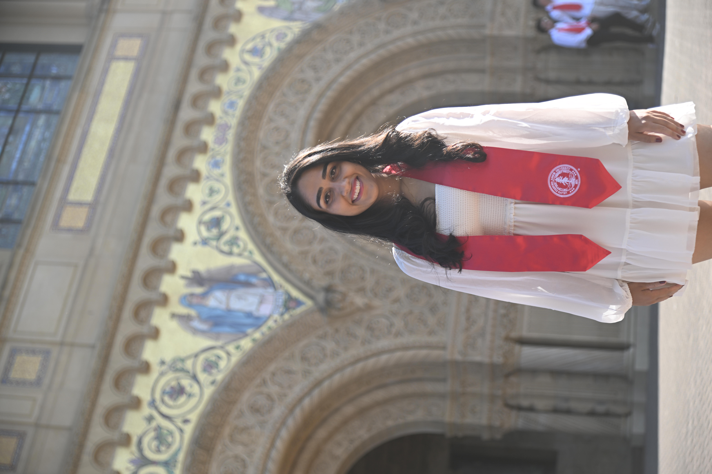
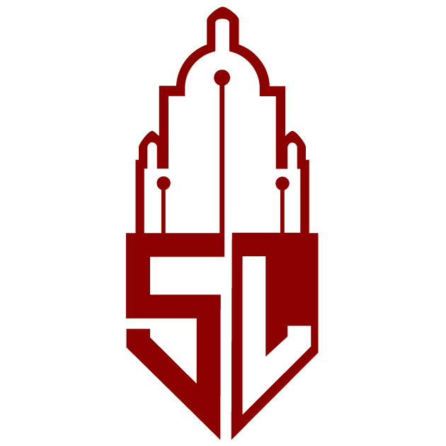

|
Manasi SharmaHi there! I am a recent graduate from Stanford University year (Master's in Computer Science on the Artificial Intelligence track) and I completed my undergraduate program at Columbia University in Computer Science and Physics! I consider myself a generalist - I have broad experience applying AI in a broad set of domains, from astronomy to autonomous vehicles, and I am now really passionate about bringing the power of Large Language Models and other similar foundation models to enterprises and making them for robust for use. Research: I am currently member of the ILIAD under Prof. Dorsa Sadigh, in which I am currently working on two projects - 1) Language-Conditioned Diffusion Models for Shared Autonomy 2) Large Language Models as Trajectory Labelers. In the past, I also worked in the Stanford Vision Lab under Prof. Fei-Fei Li and Prof. Prof. Jiajun Wu, on the BEHAVIOR project in robotic simulation benchmarking, in which I worked on assembling action, goal, etc. labels for demonstrations. Teaching: I have also been a TA for some of the most popular courses at Stanford, and they have been some of the most rewarding experiences of my college career, from Fei-Fei Li's Computer Vision course to Andrew Ng's Deep Learning class (you should also hopefully be able to see my public tutorial for the Natural Language Processing course on YouTube soon!) Internship: During the summer of 2022, I also interned in the Autonomous Vehicles team at Nissan, in which I worked on assembling a LiDAR only classification system for road objects! I sought an experience in which I was able to make a significant contribution (forgoing other offers, eg. Amazon), was very happy that the experience turned out well and my classification had been deployed in the AV fleet at Nissan last winter! Everything else: Outside of work, I love dancing (I was Captain of a Raas team (Indian folk dance) at Columbia, you can check us out here), playing the keyboard and in the vein of having moved to the Bay Area, I enjoy going on hikes (Vasona Park ftw!) Undergraduate Experience: I graduated in 2021 from Columbia University with a Bachelor's degree in Computer Science and Physics. As an undergrad, I was supervised by Prof. Daniel Hsu and Prof. Zoltan Haiman on interpreting astrophysical deep learning models for weak lensing using an array of saliency map methods. I started off my undergraduate program with a broad interest in computational physics and first pursued the direction of AI at Caltech in 2019, under Prof. Mansi Kasliwal in which I developed a real/bogus image astrophysical source classifier for the IR-Gattini telescope that performed so well that it was permanently included in the telescope's data processing pipeline. As I entered graduate school, unfulfilled by the relatively potentially impact astrophysics can have on current-life and real-world affairs, my interest in AI broadened to include more real-world applications that had a greater focus on human and human-computer interaction, such as LLMs and AVs. Areas of Experience: Deep Learning, Natural Language Processing, Computer Vision, Diffusion Models, Explainability, Reinforcement Learning & Decision Making, Robotics, & Graph Neural Networks. |
 |
Education |
Stanford University, School of EngineeringMaster's in Computer Science with a Research Distinction (Thesis)Graduated in June 2023 Advisors: Dorsa Sadigh (ILIAD Lab), Fei-Fei Li, Jiajun Wu (Stanford Vision Lab) |
|

|
Columbia University, Columbia CollegeBA in Computer Science (major) and Physics (minor)Graduated in May 2021 Advisors: Daniel Hsu, Zoltan Haiman |
Professional / Research Experience |
Stanford University, ILIAD Lab[Oct 2022 -- present] |
|
Pear VC[Oct 2022 -- Jun 2023] |
|
Nissan-Renault-Mitsubishi: Alliance Innovation Laboratory (AIL-SV)[June 2022 -- Sep 2022] |
|
Graduate Community Chair, Stanford Woman in Computer Science[Jun 2022 -- June 2023] |
|
|  |
Stanford University, Stanford Vision Laboratory[Oct 2021 -- June 2022]BEHAVIOR Project: |
Columbia University, Data Science Institute[Sep 2019 -- June 2021] |
|
California Institute of Technology, Division of Physics, Mathematics and Astronomy[Jun 2019 -- Aug 2019] |
|
Columbia University, Department of Physics[Jun 2018 -- May 2019] |
Publications |
|
Chengshu Li, Cem Gokmen, ... Manasi Sharma..., Conference on Robot Learning (CoRL), 2022 Paper link will be posted when it's made publicly available on arXiv. We present BEHAVIOR-1K, a comprehensive simulation benchmark for human-centered robotics, motivated by the results of an extensive survey on `what do you want robots to do for you?'. It includes the definition of 1,000 everyday activities, grounded in 50 scenes (houses, gardens, restaurants, offices, etc.) with more than 3,000 objects annotated with physical and semantic properties. It also includes OmniGibson, a novel simulator that supports these activities via realistic physics simulation and rendering of rigid bodies, deformable bodies, and liquids. |
|
|
Jose Manuel Zorrilla Matilla, Manasi Sharma, Daniel Hsu, Zoltan Haiman American Physical Society, PHYSICAL REVIEW D, 2020 Paper link Deep neural networks (DNNs) are powerful algorithms that have been proven capable of extracting non-Gaussian information from weak lensing (WL) datasets. We apply a series of well-established saliency methods to interpret the DNN and find that the most relevant pixels are those with extreme K values. For noiseless maps, regions with negative K account for 69%-89%. of the attribution of the DNN output, defined as the square of the saliency in input space. In the presence of shape noise, the attribution concentrates in high-convergence regions, with 36%-68% of the attribution in regions with highest 3rd standard deviation of K values. |
|
|
Kishalay De, Matthew J. Hankins, ... Manasi Sharma, ..., Publications of the Astronomical Society of the Pacific, vol. 132., 2020 Paper link Palomar Gattini-IR is a new wide-field, near-infrared (NIR) robotic time domain survey operating at Palomar Observatory. Using a 30 cm telescope mounted with a H2RG detector, Gattini-IR achieves a field of view (FOV) of 25 sq. deg. with a pixel scale of 8 7 in J-band. Here, we describe the system design, survey operations, data processing system and on-sky performance of Palomar Gattini-IR. To automatically distinguish between an astrophysical source and image subtraction artifacts, we use a ML based real-bogus (RB) classification scheme. Bogus candidates were compiled using a labeling scheme on Zooniverse, a citizen science web portal which allows set up of individual projects usually pertaining to classification and data visualization. The performance of the model was evaluated using the following metrics: accuracy on the test set of 0.975, a Matthews correlation coefficient of 0.949 and an F1 score of 0.977. |
Teaching Experience |
Stanford School of Engineering[Mar 2022 -- Jun 2022]Graduate Teaching Assistant |
|

|
Columbia University, MATH 1201-1202 (Calculus III and IV)[Mar 2022 -- Jun 2022]Columbia University, Department of Mathematics |
Stanford Course Projects
Crowd Aware Intent-based Reinforcement Learning - CS333 (Algorithms for Interactive Robotics)Winter '22Predicting Drug Interactions with Graph Neural Networks - CS224W (Machine Learning with Graphs)Fall '21Debiasing Models for Out-of-domain Generalization - CS224N (NLP for Deep Learning)Winter '22Optimizing Wind Turbine Placement Subject to Turbine Wakes - CS238 (Decision Making Under Uncertainty)Fall '21LIMES: LIME for Image Segmentation - CS329T (Trustworthy Machine Learning)Spring '22Monte-Carlo Tree Search Player - CS227B (General Game Playing)Spring '22 |
Honors & Awards
|
Leadership Roles and Extra-curriculars
|